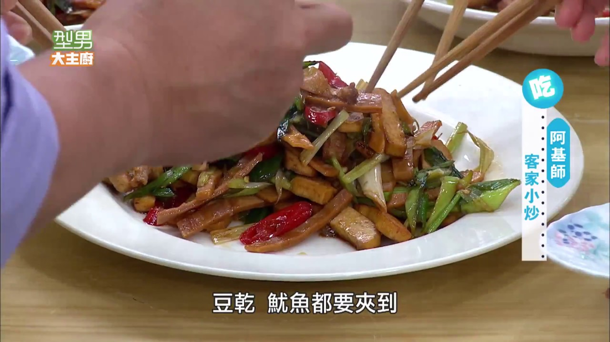

客家小炒
1.五花肉切條，土芹菜切段，蒜苗略拍後切斜片、蒜白蒜綠分開，辣椒切斜片、小黃豆乾切條；乾魷魚逆紋切條，泡魷魚的水保留備用。
2.起鍋熱油，將五花肉乾煸後，再放入豆乾一起煸炒至香。 3.同上鍋炒出香味後，放入魷魚、辣椒片拌炒，再加入蒜綠、適量熱水、魷魚水加蓋燜煮，接著加入蒜白、土芹菜、少許冰糖拌勻，最後調入適量白胡椒粉、醬油、適量香油、米酒1大匙調味翻炒均勻，起鍋前再淋入鍋邊烏醋即可。

阿基師鄭衍基
鳳梨蝦球
什錦海鮮湯麵
心得